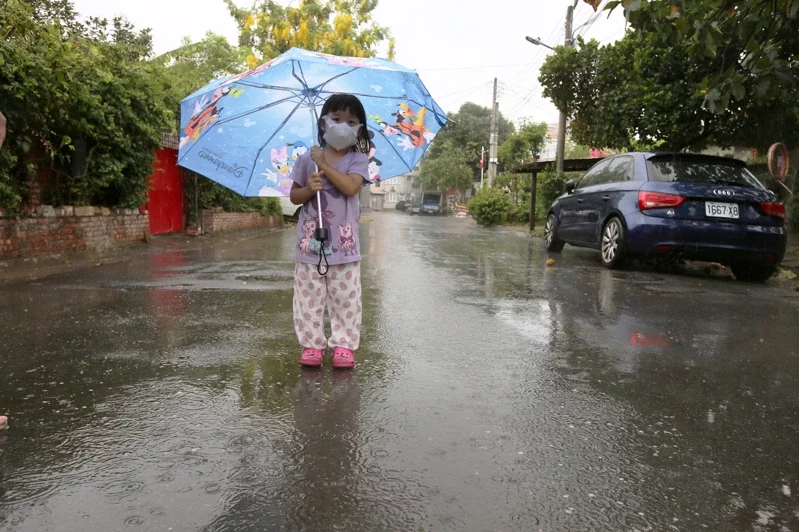

天氣風險公司天氣分析師林孝儒表示，今天隨著鋒面接近，中北部及東半部雲量都已明顯的偏多，並於北海岸已有短暫陣雨的現象，而中南部則尚未受到鋒面影響，仍維持時晴時多雲無降雨的天氣，但目前可見海峽間已有較旺盛的對流再發展中。
他說，雖然對流的東移過程中會減弱，但中北部地區也慢慢陸續有些短暫陣雨或雷雨的現象了，而南部及東半部也將有些短暫陣雨，但降雨強度上會較中北部來的較緩一些。
不過，他說，今天影響台灣降雨的情況都還不算多，主要為鋒面前緣的雲系帶來短暫陣雷雨，短時雖然會有比較大的雨勢，但持續性較弱，整體累績降雨量都還不算多。預估明天至下周一期間隨鋒面再更往南擺盪，甚至徘徊台灣的上空，將再帶來更明顯的降雨，西半部的降雨範圍會再略往南延伸，南部降雨有機會再較今天更多一些，而中北部地區則更要留意劇烈天氣的發生，將有局部大雨到短時豪雨機會。
近期天氣總結，林孝儒表示，明天起至下周二鋒面徘徊於台灣附近，帶來不穩定天氣，將容易有雷雨胞發展，帶來短時較大的雨勢，並伴隨雷擊與強陣風，尤其周日至下周一西北部地區，若必要外出活動時，留意一下劇烈天氣的變化，當雨勢來得又猛又急，易造成路面濕滑視線不佳，要多加注意行車安全。
而目前西半部水情面臨不足的情況，他說，本波梅雨鋒面有機會為中北部帶來局部大雨或短時豪雨機會，不過由於鋒面上發展的對流尺度小變化快，有強降雨機會，但不見得將精準落於集水區，以本波鋒面強度的降雨規模仍不足已解旱，且照目前中長期天氣趨勢預估，雖然6月中旬前鋒面都還是有南下影響台灣的機會，但6月下旬開始，太平洋高壓將有機會增強，屆時梅雨鋒面更是北退，因此仍需節水。
